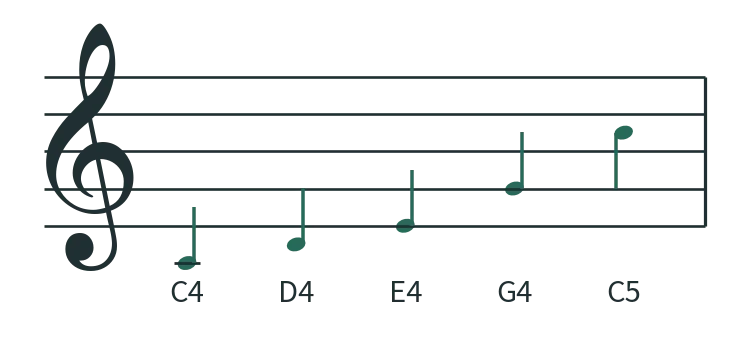

第1章 最初の四拍
拍を保ちながら音を抜く
机を等間隔に四回ずつ叩き、声に出して「1、2、3、4」と数える。次は第2拍だけ机を叩かない。数え続けられれば、拍という時間上の位置は、音が鳴っていない箇所でも保たれている。テンポは拍の速さで、四分音符を一拍とする 120 BPM では一拍が 秒である。リズムは実際に音が立ち上がる時刻・持続・休止の配置である。拍節は、拍同士を階層化して強弱やまとまりを感じ取る枠組みである。
次に「1 と 2 と 3 と 4 と」と刻む。第2拍より少し前の「1 の と」に強い音を置いて第2拍まで伸ばすと、期待された強拍と発音位置がずれる。これがシンコペーションの一例である。タイは同じ高さの音符をつないで一音として持続させる記号であり、結んだ先の拍では発音し直さない。
4/4・3/4・6/8・5/4
拍子記号の分母は記譜上の音価を表す。4/4 は四分音符4個相当、3/4 は四分音符3個相当、6/8 は八分音符6個相当で一小節を満たす。典型的な6/8では付点四分音符が一拍で、その内部を三分割する。3/4では四分音符を三拍感じる。両者を八分音符6個で書けても、強拍の間隔は異なる。
| 拍子 | 八分音符で数えた際のまとまりの例 | 大きな拍 |
|---|---|---|
| 3/4 | 1 2 ｜ 3 4 ｜ 5 6 | 3拍 |
| 6/8 | 1 2 3 ｜ 4 5 6 | 2拍 |
| 5/4 | 四分音符で 1 2 3 ｜ 4 5 | 3＋2 と捉える一例 |
5/4 の実例はデイヴ・ブルーベック・カルテット《Take Five》（作曲ポール・デスモンド）。冒頭の伴奏が定着したら、サックスの自由なフレージングに釣られず、低音と打楽器を頼りに「1 2 3｜4 5」を数える。曲のすべてのアクセントがこの区切りに一致する必要はない。 公式録音 L01
音名・音価・音域
西洋の五線譜では、線上と線間を一段進むごとに音名が一つ進む。ト音記号では五線を下から E4–G4–B4–D5–F5、ヘ音記号では G2–B2–D3–F3–A3 と読む。C4 はト音記号の五線の下、ヘ音記号の五線の上の加線に位置する。♯ と ♭ は記譜上の高さをそれぞれ半音上げ・下げ、♮ は臨時記号や調号が指示する変化をその箇所で解く。古典的な慣例では臨時記号の効力は原則として同じ小節内の同じ音名・オクターヴに及ぶ。付点では元の音価の半分を足す。四分音符に付点を付けると八分音符3個分になる。

最初の作曲。 4/4で、各小節の四分音符4個を C4 D4 E4 G4 ｜ G4 E4 D4 C4 と並べる。まずそのまま歌う。次に第2小節の最後の C4 を二拍にし、直前の E4・D4 を八分音符へ縮める。音の順序を保存しても終止感やフレーズの重心が変わる。